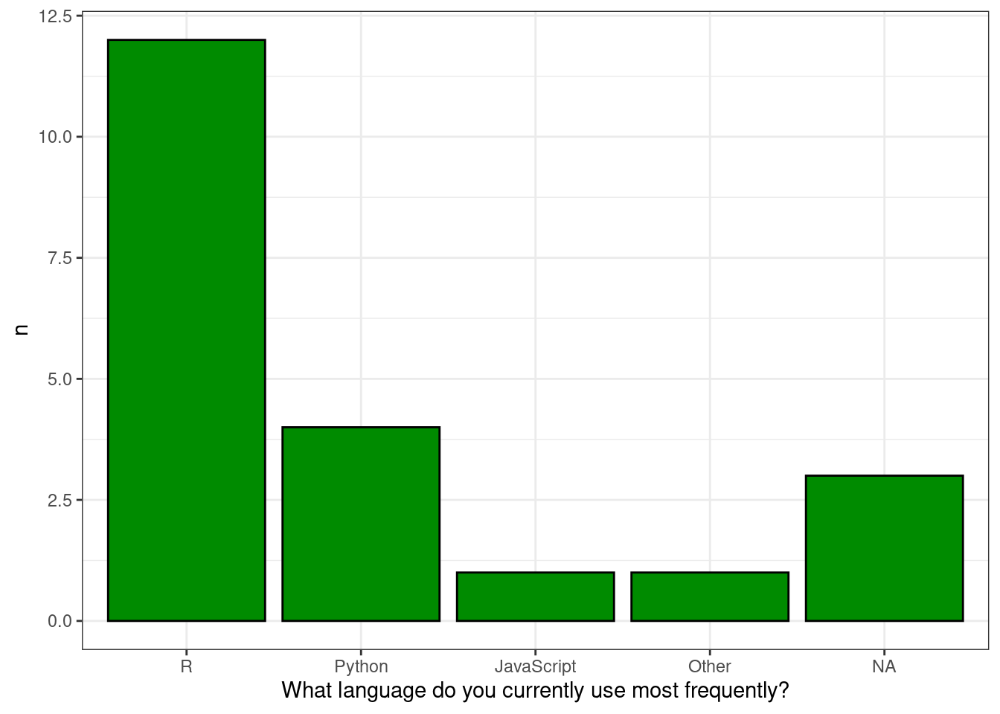

<h2>Survey for NCEAS Data Science Training</h2>
<p id="docs-internal-guid-29fd5090-7fff-9d8d-712a-9c2ecb9c6824" dir="ltr"><strong>Purpose</strong>: You are being asked to participate in a questionnaire for teaching purposes. The results of this questionnaire will be used to help teach participants in data science trainings how to use reproducible computing techniques to access, analyze, and visualize survey results using programmatic techniques. This questionnaire is used for teaching purposes only, and is not used for research of any kind.</p>
<p dir="ltr"><strong>Procedures</strong>: If you choose to help, you will complete an online questionnaire. The questionnaire will take less than 5 minutes to complete. You can skip questions that you do not wish to answer or stop the questionnaire at any time. The questionnaire is anonymous and no one will be able to link your responses back to you. Please do not include your name or other information that could be used to identify you in the questionnaire responses. <br></p>
<p dir="ltr"> </p>
<p dir="ltr">If you have any questions regarding the questionnaire, please contact the NCEAS Learning Hub at learning-hub@neceas.ucsb.edu. To learn more about NCEAS course offerings, visit <a href="https://www.nceas.ucsb.edu/learning-hub">nceas.ucsb.edu/learning-hub</a>. If you want to participate in this study, click the "Accept" button to start the questionnaire.</p>
FALSE
QID2
Q2
How long have you been programming?<br>
FALSE
QID3
Q3
What language do you currently use most frequently?<br>
FALSE
QID4
Q4
What data science tool or language are you most excited to learn next?<br>
q2 <- survey_results %>%select(Q2) %>%group_by(Q2) %>%summarize(n =n())kable(q2, col.names =c("How long have you been programming?", "Number of Responses")) %>%kable_styling()
How long have you been programming?
Number of Responses
1-5 years
9
5-10 years
7
10-20 years
1
> 20 years
1
NA
3
Question 3
q3<- survey_results %>%select(Q3) %>%group_by(Q3) %>%summarise(n =n())ggplot(q3, aes(x = Q3, y = n )) +geom_col(color ="black", fill ="green4") +labs(x ="What language do you currently use most frequently?") +theme_bw()

Free Text
q3_text <- survey_results %>%select(Q3_7_TEXT) %>%drop_na()kable(q3_text,col.names ="Other Responses to 'What language do you currently use most frequently'") %>%kable_styling()
Other Responses to 'What language do you currently use most frequently'
Julia
Question 4
q4 <- survey_results %>%select(Q4) %>%rename("What data science tool or language are you most excited to learn next"= Q4) %>%drop_na()kable(q4, col.names ="What data science tool or language are you most excited to learn next?") %>%kable_styling()
What data science tool or language are you most excited to learn next?
Use VS code for multi programming languages collaboration